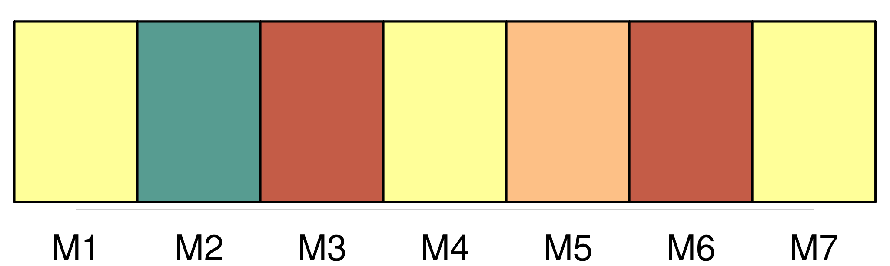

Longueur nb maillons : 9 mentions |
 |
B : Habilitation des officiers de police judiciaire de la police nationale
Pour chaque fonctionnaire affecté à un tel emploi, une demande d'habilitation est adressée par le chef du service auquel appartient ce fonctionnaire, au procureur général près la cour d'appel dans le ressort de laquelle l'officier de police judiciaire exerce habituellement [ses fonctions d'officier de police judiciaire]
La demande doit préciser la nature [des fonctions confiées à cet officier de police judiciaire] et les limites territoriales dans lesquelles il sera appelé à [les] exercer habituellement. [3 phrases]
Article R15-4
Article R15-5 [2 phrases]
Article R15-6 [1 phrases] L'officier de police judiciaire dont l'habilitation a été suspendue reprend de plein droit, à l'expiration de la suspension, l'exercice des [attributions attachées à sa qualité] |
|
Il est possible de télécharger la ressource sur la page Ortolang |
Si vous avez des questions ou vous voyez des erreurs, merci d'envoyer un mail à silvia.federzoni89@gmail.com |